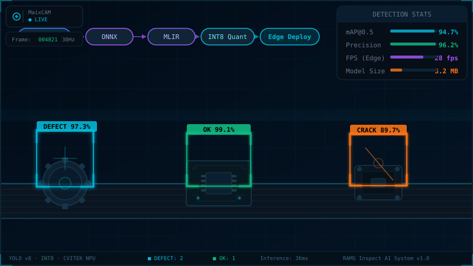
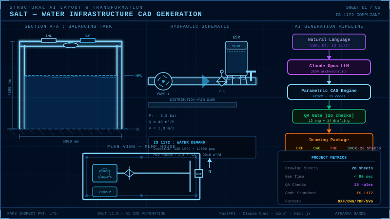

Featured Projects
A selection of my recent R&D work and Full Stack applications.

MediScopic-BC
Dual-stage deep learning framework for breast cancer histopathology, reaching 84.84% accuracy. Introspection layer using Entropy & Embedding Distance flags ~75% of uncertain predictions for human review.

HospAgent
Digital health record system for migrant workers. AI-driven patient surge prediction improving capacity planning by 35%.

CodeMentor AI
AI-powered coding assistant providing real-time code suggestions and mentorship. Secure JWT auth and 99.5% uptime.

Edge AI Defect & PPE Detection
YOLO-based rack/warehouse defect detection and real-time PPE compliance, quantized to INT8 and deployed on CVITEK NPU / MaixCAM edge hardware with no cloud dependency.

SALT
AI-powered system generating consultant-grade multi-sheet DXF/SVG drawing packages for water infrastructure, with a precedent library from 38 real WTP drawings across 9 projects.